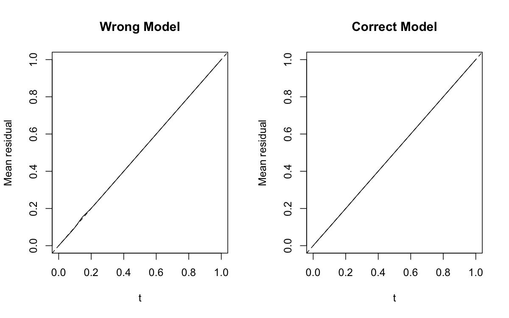
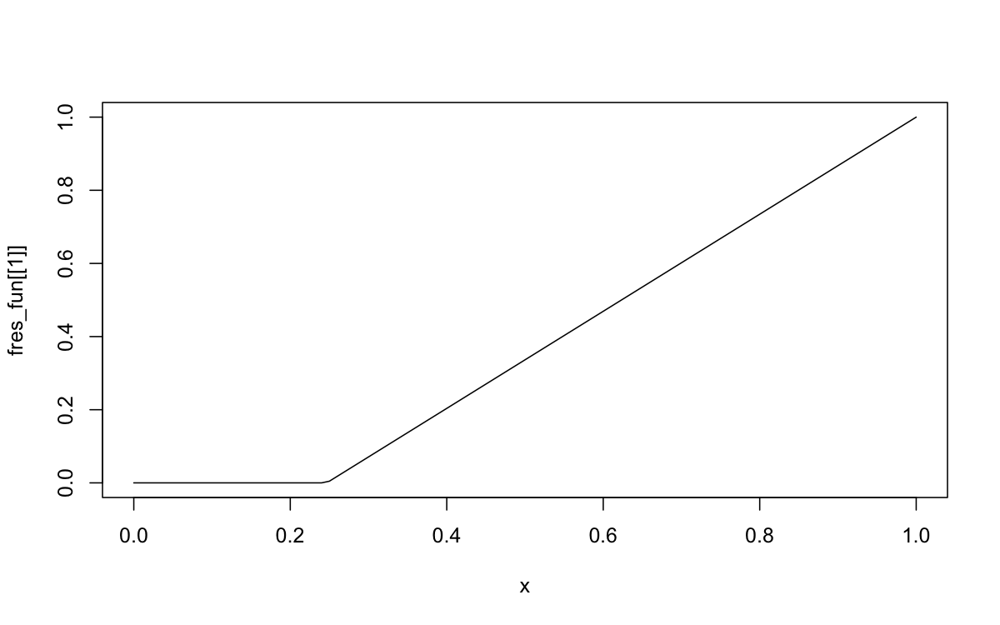
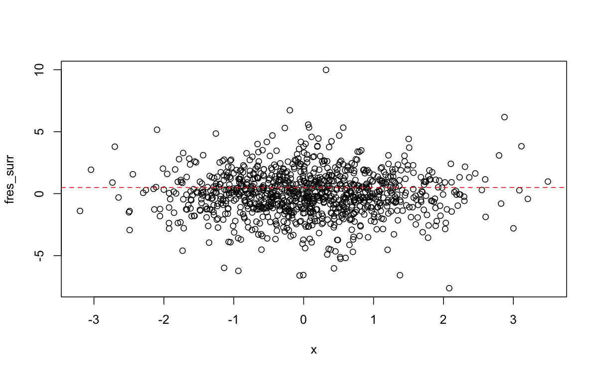
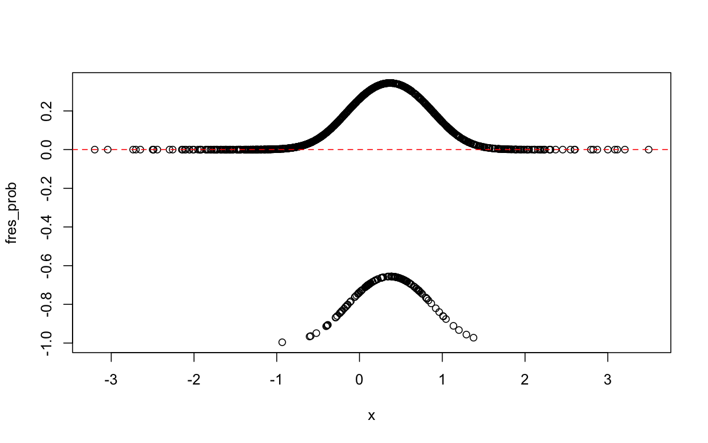
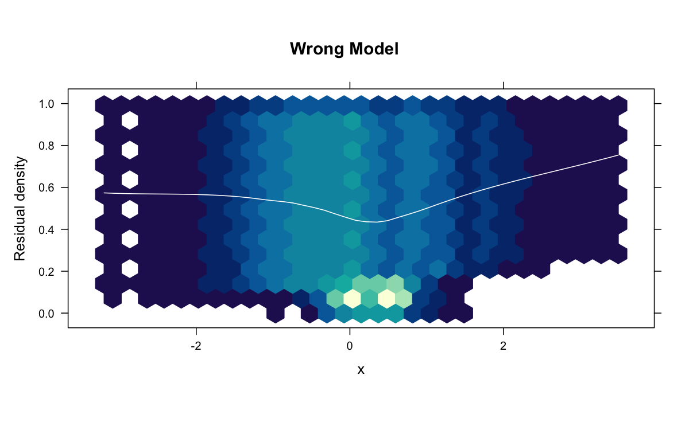
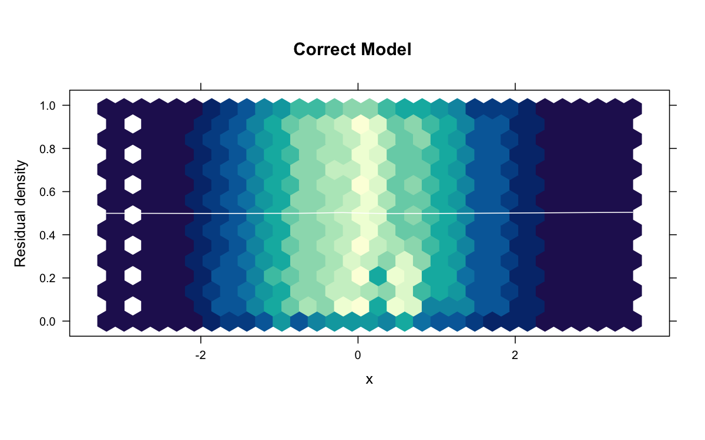
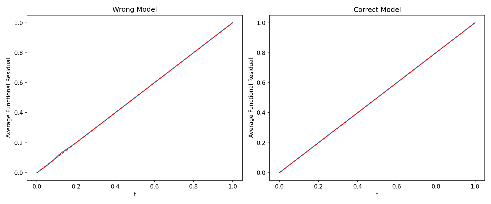
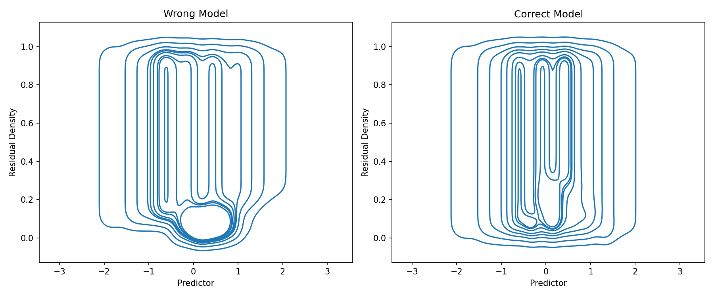
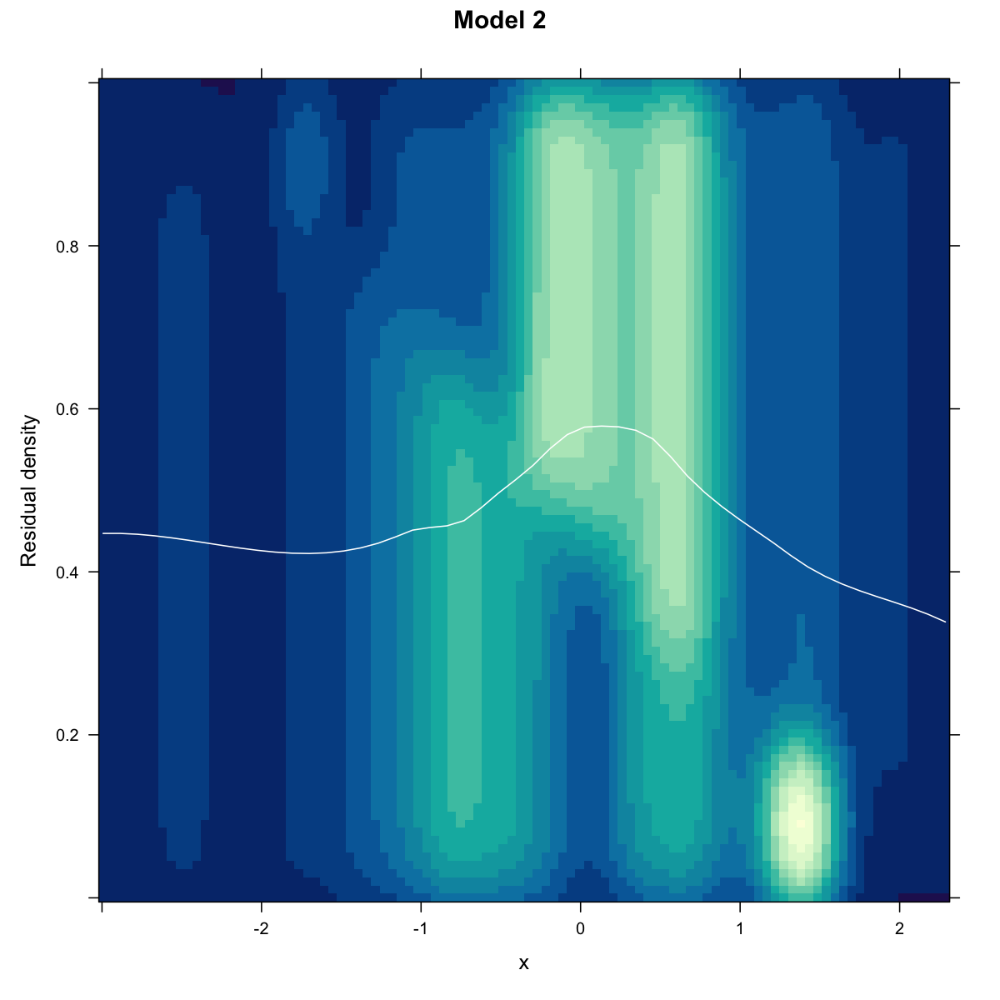
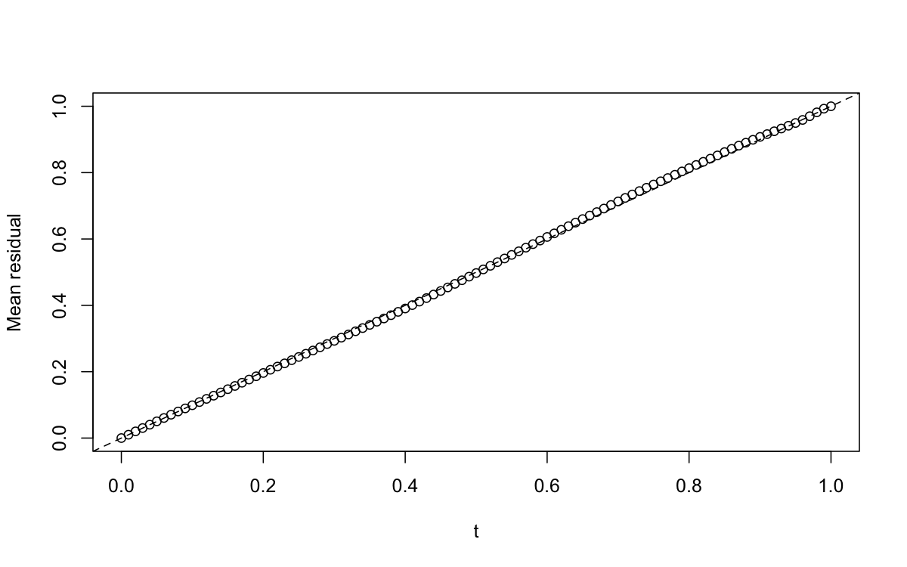

This guide will get you up and running with unifres in just a few minutes.
R quick start
Basic example: logistic regression
library(unifres)# Generate example data with a quadratic relationshipset.seed(1217)n <-1000x <-rnorm(n)z <-1-2*x +3*x^2+rlogis(n)y <-ifelse(z >0, 1, 0)# Fit two models: one wrong (missing quadratic), one correctfit_wrong <-glm(y ~ x, family = binomial)fit_correct <-glm(y ~ x +I(x^2), family = binomial)# Compute functional residualsfres_wrong <-fresiduals(fit_wrong)fres_correct <-fresiduals(fit_correct)# Create function-function plots to assess model fitpar(mfrow =c(1, 2))ffplot(fit_wrong, main ="Wrong Model", type ="l")ffplot(fit_correct, main ="Correct Model", type ="l")

The function-function plot should show deviation from the diagonal for the wrong model and close adherence for the correct model.
Using different residual types
# Functional residuals (list of functions)fres_fun <-fresiduals(fit_correct, type ="function")plot(fres_fun[[1]]) # Plot first functional residual

# Surrogate residuals (random samples)fres_surr <-fresiduals(fit_correct, type ="surrogate")plot(x, fres_surr)abline(h =0.5, col ="red", lty =2)

# Probability-scale residualsfres_prob <-fresiduals(fit_correct, type ="probscale")plot(x, fres_prob)abline(h =0, col ="red", lty =2)

Functional residual density plots
library(hexbin)# FRED plots help identify missing covariates or functional formspar(mfrow =c(1, 2))fredplot(fit_wrong, x = x, type ="hex", main ="Wrong Model")

fredplot(fit_correct, x = x, type ="hex", main ="Correct Model")

The wrong model should show patterns in the FRED plot, while the correct model should show random scatter.
Python quick start
Basic example: logistic regression
import numpy as npimport statsmodels.api as smfrom unifres import fresiduals, ffplot, fredplotimport matplotlib.pyplot as plt# Generate example data with a quadratic relationshipnp.random.seed(1217)n =1000x = np.random.normal(size=n)z =1-2*x +3*x**2+ np.random.logistic(size=n)y = np.where(z >0, 1, 0)# Fit two models: one wrong (missing quadratic), one correctX_wrong = sm.add_constant(x)X_correct = sm.add_constant(np.column_stack([x, x**2]))model_wrong = sm.GLM(y, X_wrong, family=sm.families.Binomial()).fit()model_correct = sm.GLM(y, X_correct, family=sm.families.Binomial()).fit()# Create function-function plotsfig, axes = plt.subplots(1, 2, figsize=(12, 5))ffplot(model_wrong, ax=axes[0])axes[0].set_title("Wrong Model")ffplot(model_correct, ax=axes[1])axes[1].set_title("Correct Model")plt.tight_layout()plt.show()

Using different residual types
# Functional residuals (list of scipy distribution objects)fres_fun = fresiduals(model_correct, type="function")t_vals = np.linspace(0, 1, 100)plt.plot(t_vals, fres_fun[0].cdf(t_vals))plt.xlabel("t")plt.ylabel("F(t)")plt.title("First Functional Residual")plt.show()
# FRED plots help identify missing covariates or functional formsfig, axes = plt.subplots(1, 2, figsize=(12, 5))fredplot(model_wrong, x, type="kde", ax=axes[0])axes[0].set_title("Wrong Model")fredplot(model_correct, x, type="kde", ax=axes[1])axes[1].set_title("Correct Model")plt.tight_layout()plt.show()

Understanding the output
Function-Function (Fn-Fn) Plots
The ffplot() function creates a plot of the average functional residual against the theoretical CDF of a Uniform(0,1) distribution.
Interpretation: - Good fit: Points follow the 45-degree line closely - Poor fit: Systematic deviations from the diagonal indicate model misspecification - This is analogous to a Q-Q plot but for functional residuals
Functional Residual Density (FRED) Plots
The fredplot() function visualizes the density of functional residuals against a covariate.
Interpretation: - Good fit: Random scatter with no patterns - Poor fit: Systematic patterns suggest: - Missing covariates - Incorrect functional form (e.g., missing polynomial terms) - Incorrect link function
# Generate data and fit two modelsset.seed(42)x <-rnorm(100)y <-rbinom(100, 1, plogis(0.5+0.8*x))model1 <-glm(y ~1, family = binomial)model2 <-glm(y ~ x, family = binomial)# Compare models side by sidepar(mfrow =c(2, 2))ffplot(model1, main ="Model 1")ffplot(model2, main ="Model 2")fredplot(model1, x = x, main ="Model 1")fredplot(model2, x = x, main ="Model 2")

Working with large datasets
# Large datasetset.seed(42)n <-2000x <-rnorm(n)y <-rpois(n, exp(0.5+0.3*x))fit <-glm(y ~ x, family = poisson)# Subsample for faster plottingffplot(fit, n =1000) # Use 1000 random observations

fredplot(fit, x = x[1:1000]) # Plot first 1000 points